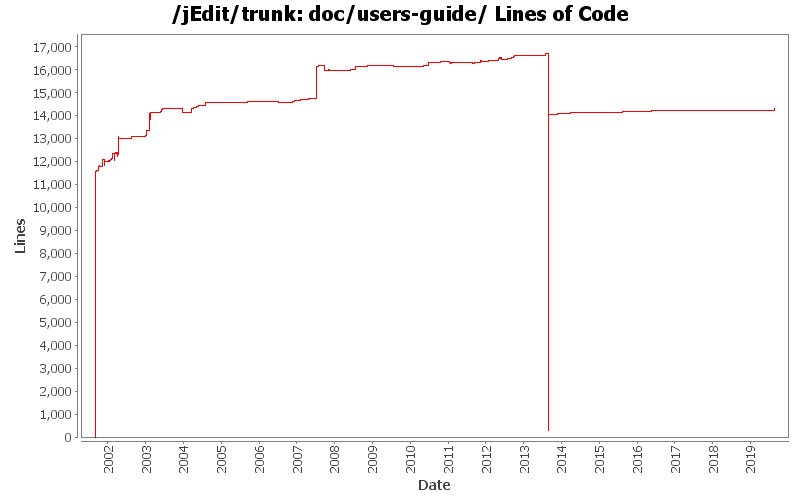

| Author | Changes | Lines of Code | Lines per Change |
|---|---|---|---|
| Totals | 1025 (100.0%) | 55934 (100.0%) | 54.5 |
| Vampire0 | 123 (12.0%) | 25290 (45.2%) | 205.6 |
| spestov | 429 (41.9%) | 24889 (44.5%) | 58.0 |
| ezust | 367 (35.8%) | 3528 (6.3%) | 9.6 |
| jgellene | 30 (2.9%) | 1047 (1.9%) | 34.9 |
| daleanson | 16 (1.6%) | 373 (0.7%) | 23.3 |
| orutherfurd | 3 (0.3%) | 223 (0.4%) | 74.3 |
| jarekczek | 20 (2.0%) | 210 (0.4%) | 10.5 |
| evanpw | 3 (0.3%) | 128 (0.2%) | 42.6 |
| vanza | 5 (0.5%) | 74 (0.1%) | 14.8 |
| shlomy | 6 (0.6%) | 72 (0.1%) | 12.0 |
| k_satoda | 11 (1.1%) | 70 (0.1%) | 6.3 |
| kerik-sf | 3 (0.3%) | 16 (0.0%) | 5.3 |
| kpouer | 5 (0.5%) | 12 (0.0%) | 2.4 |
| olearyni | 1 (0.1%) | 1 (0.0%) | 1.0 |
| elberry | 1 (0.1%) | 1 (0.0%) | 1.0 |
| uid49995 | 1 (0.1%) | 0 (0.0%) | 0.0 |
| mf3 | 1 (0.1%) | 0 (0.0%) | 0.0 |
Improve Regular Expressions documentation
118 lines of code changed in 1 file:
Docs, changelog.
2 lines of code changed in 1 file:
jEdit 5.6
0 lines of code changed in 1 file:
remove unnecessary paragraph. also update URL for docbook.xsd to use https (since it is now being redirected).
1 lines of code changed in 2 files:
FR#506: Option for global autosave directory for existing files (not backup)
13 lines of code changed in 1 file:
doc fixes.
2 lines of code changed in 1 file:
docs.
9 lines of code changed in 1 file:
Document large files option pane for completeness.
8 lines of code changed in 1 file:
More doc updates.
65 lines of code changed in 2 files:
Updating documentation re: recent changes to default behavior of autosave/backup features.
88 lines of code changed in 2 files:
Resolve symbolic link paths before choosing the autosave directory.
2 lines of code changed in 1 file:
Use backup directory for autosaves.
5 lines of code changed in 1 file:
Use same property for backup directory as autosave directory.
2 lines of code changed in 1 file:
FR#506: Option to change global autosave directory (not backup)
6 lines of code changed in 1 file:
Documented autosave untitled. Removed the "never mark untitled buffers dirty" option
which is no longer needed.
5 lines of code changed in 1 file:
Version bump. 5.5pre1.
2 lines of code changed in 1 file:
increase version to 5.4.0
3 lines of code changed in 1 file:
Made toggle page breaks toggleable action and put into view menu.
0 lines of code changed in 1 file:
Doc update for printing.
7 lines of code changed in 2 files:
Print system updates.
7 lines of code changed in 1 file:
How to get a list of all Actions.
14 lines of code changed in 1 file:
s/check box/toggle button
1 lines of code changed in 1 file:
Updated docs about printing.
1 lines of code changed in 1 file:
Fixed a missing close <para> in files.xml
Also whitespace.
7 lines of code changed in 1 file:
More printing stuff, updated docs about printing, added option to text area to show page breaks.
28 lines of code changed in 1 file:
updated docs about eolmarkerchar.
16 lines of code changed in 1 file:
Refactored editing options pane into several tabs, which makes this easier to use, plus adds the ability for the user to edit the modes lists as requested in feature request #515.
13 lines of code changed in 1 file:
Implement feature request #493, confirmation dialog for close all.
19 lines of code changed in 1 file:
Fix bug #3923, documentation bug about where auto-saved files are saved.
0 lines of code changed in 1 file:
replace with multi-expression beanshell example
14 lines of code changed in 1 file:
UI update to allow adding new mode files by point and click, see FR #471.
17 lines of code changed in 1 file:
Small changes, whitespace.
58 lines of code changed in 1 file:
s/2014/2015
7 lines of code changed in 1 file:
Changelog + docs.
17 lines of code changed in 1 file:
Separated sorting of Buffer Sets and Buffer Switcher so these can be done independently.
11 lines of code changed in 1 file:
Document startup directory in user settings dir.
4 lines of code changed in 1 file:
docs
6 lines of code changed in 1 file:
Bumping version to 5.3pre1
2 lines of code changed in 1 file:
Docs.
0 lines of code changed in 1 file:
OptionsDialog now remembers and restores the last selected pane
under more circumstances (See Project Option pane for example) (Alan Ezust)
6 lines of code changed in 1 file:
(441 more)